MSc Mechanical Engineering / Technical Director & Co-owner,CWT Group
I make difficult welds possible. Since 2012, turning materials that
shouldn't weld cleanly into production parts that pass aerospace and
automotive inspection — backed by FEA, metallurgy and published research,
not guesswork.
Turnover growth after I rebuilt the company's technical and quality strategy
2016 → present
+26%
Tensile and yield strength gained in aluminium laser welds using ultrasound
Peer-reviewed · Metals 2022
14
Years specialising in laser welding, marking and weld metallurgy
Continuously since 2012
3
Management systems written, implemented and certified from scratch
AS9100D · ISO 9001 · ISO 14001
01 — Profile
The engineer you call when the weld keeps cracking
Most of my work starts with a phone call about a part that will not behave. A weld that
cracks on the fifth segment but not the first. An alloy the datasheet says is unweldable.
A joint that has to survive 100,000 miles and a safety factor of three.
I graduated from Instituto Superior Técnico in Lisbon with an MSc in Mechanical Engineering,
having first arrived at Carr's in 2009 as a placement student and written my thesis on the floor
of the very company that then hired me. Since 2012 I
have worked my way from the shop floor to Technical Director and co-owner of CWT
Group — a precision laser welding subcontractor serving aerospace,
automotive, Formula 1, medical, oil & gas and tool engineering. In 2025 I completed a
management buyout of the business alongside my two fellow directors.
What I bring is the whole chain, not one link of it: assessing weldability at quote stage,
calculating the weld depth and profile a design actually needs, developing the laser
parameters to achieve it, and then building the quality system that proves it — every time,
to AS9100D. When the existing technology could not reach far enough, I went and improved the
technology itself, and published the results.
I am equally comfortable in front of a customer's engineering team, a conference audience, or
a micrograph at 4000× magnification. The common thread is a diligent, methodical approach and
a genuine enjoyment in explaining the why to whoever needs to hear it.
“The legacy I want to leave behind is a legacy of kindness and helpfulness — sharing what I
have come to learn with people who will grow from it and become better engineers.”
02 — Capabilities
What I am usually brought in to do
Six areas where I take responsibility for the outcome — from the first weldability question
on a drawing through to the certification pack that ships with the part.
Weldability & materials assessment
Evaluating whether a material and joint can be welded reliably — at quote stage, before anyone commits — and designing strategies around poor weldability rather than discovering it in production.
Alloy metallurgy
Hot & cold cracking
Dissimilar joints
Macro / micro analysis
Weld strength & design analysis
Calculating the weld depth and profile a design genuinely requires to hit its safety factor, and advising the customer at design stage — using SolidWorks, Cosmos and Ansys to prove it before cutting metal.
FEA — traction & torque
Safety factors
Joint redesign
Residual stress
Laser process development
Deriving the parameter set for every laser operation, guiding R&D programmes, assessing and procuring new technology, and training operators to run it. Including techniques that did not exist until we built them.
Disk & fibre lasers
Oscillating (wobble) welding
Ultrasonic-assisted
Parameter modelling
Quality systems & compliance
Writing, implementing and maintaining the management systems that let a subcontractor sell into aerospace and automotive — then running the audits, inspections and documentation that keep them credible.
AS9100D
ISO 9001:2015
ISO 14001
PFMEA / PPAP
FAIR / CofC / IR
Laser marking & engraving
Designing and running laser marking since 2014 — programming, fixture design, depth and contrast control on steels, aluminium and tooling, plus operator training and process support.
TruTops Mark
Deep engraving
Traceability marking
CNC programming
Operations & commercial strategy
Reading a business through its own data. Building the KPIs, spotting where turnaround time and non-conformance are quietly killing margin, and rebuilding the plan around what the numbers actually say.
KPI design
Power BI · Excel / VBA
PERT · CPM · Gantt
Workflow redesign
03 — Selected work
Four problems, and what I did about them
Each one opens into the full engineering story — the context, the constraint, the method and
the measured result. The micrographs and macros are from the actual samples.
Case 01R&DPeer-reviewedAluminium AA6082
Making an “unweldable” aluminium alloy stronger with sound
AA6082 contains roughly 1% magnesium silicide, which makes it notoriously prone to hot
cracking. The narrow parameter window that avoids cracking forces wide, deep welds — ruling
out thin and heat-sensitive parts, and costing the business applications. So I applied
high-power ultrasound to the molten pool during welding, and measured what happened to the
grain structure.
+26%tensile & yield strength
14–62%straighter weld profile
20–40 kHzband investigated
Published in Metals and written up for The Laser User. It is now the basis
of a proposal for high-volume automotive battery pack assembly.
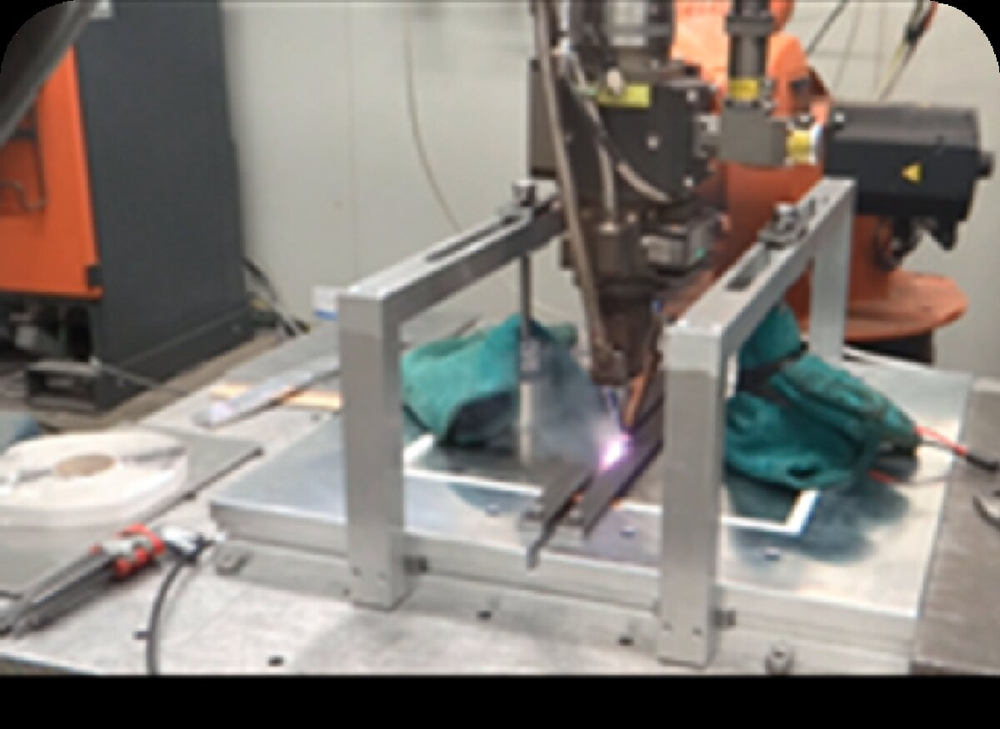
Ultrasonic-assisted laser welding trial · AA6082
Context
My 2011 MSc thesis found a welding-speed window that let AA6082 solidify without hot
cracking. But aluminium's reflectivity meant reaching that window needed very high power
density at a fixed beam diameter, and the slow speed produced welds that were wide and
deep. Heat-sensitive and thin-walled applications were simply off the table — and every
one of those was a job the company could not quote for.
The idea
The casting industry has used mechanical vibration for decades to homogenise castings,
applied over minutes to hours. Nobody had established whether it works on a solidification
event as fast as a laser weld. The mechanism I was betting on was ultrasonic grain
refinement: vibration impacts, shocks and fluid flow act as new nuclei, limiting grain
growth — and by Hall–Petch, smaller grains mean higher yield strength.
Method
Butt welding two 300 × 150 mm AA6082 plates at 1.5, 2 and 4 mm thickness.
Transducers of varying power clamped to the workpiece, sonicating the plate during welding, melting and solidification.
Ultrasonic frequency swept across 20–40 kHz to isolate the effective band.
Every trial run against a no-ultrasound baseline at identical laser settings.
Evidence gathered
Surface examination of the weld bead for microcracks and oxidation.
Reflected-light microscopy at ×200 for grain structure and dendritic growth.
SEM at 4000× (BSD, 20 kV) for intermetallic morphology.
Tensile testing to failure against the baseline.
The evidence — drag each slider to compare
Left of the handle is the conventional laser weld. Right is the same weld with ultrasound
applied. Same material, same laser settings.
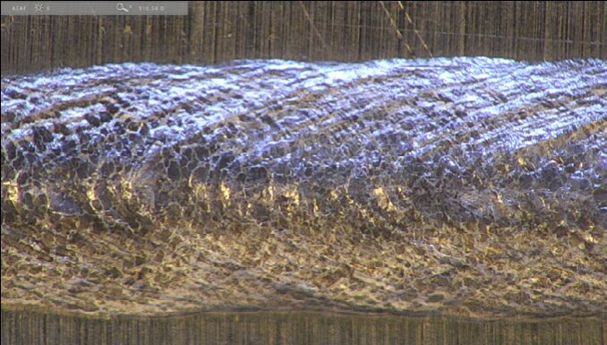
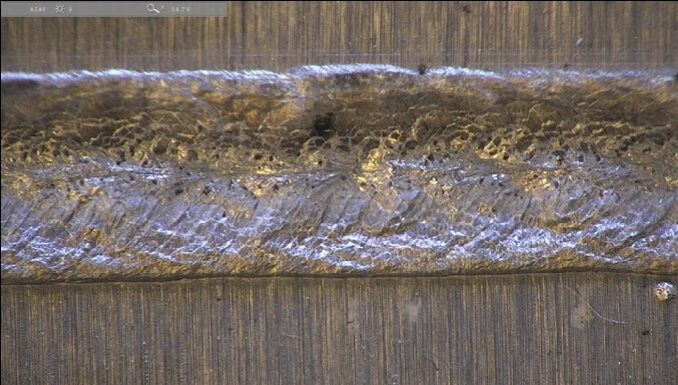
ConventionalUltrasonic
Fig. 1 — Weld surface
Microcracks along the centreline of the conventional weld, which act as crack
initiation zones, disappear completely when ultrasound is used. The plasma cloud is
visibly reduced too — the ultrasonic waves stabilise the keyhole, so vaporised metal
escapes without a pressure build-up.
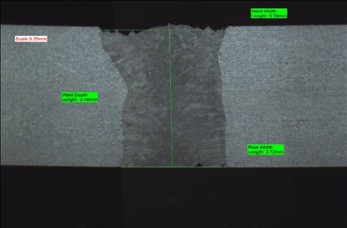
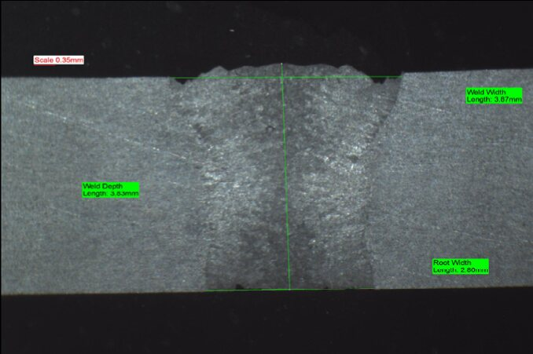
AR 1.38AR 1.19
Fig. 2 — Cross-section & aspect ratio
Aspect ratio is surface width divided by root width; closer to 1.0 means a straighter,
more parallel-sided weld. Ultrasound took it from 1.38 to 1.19 on this coupon.
Across the study the improvement ranged from 14% to 62%, with 40 kHz best on thin
plate and 28 kHz best at 4 mm.
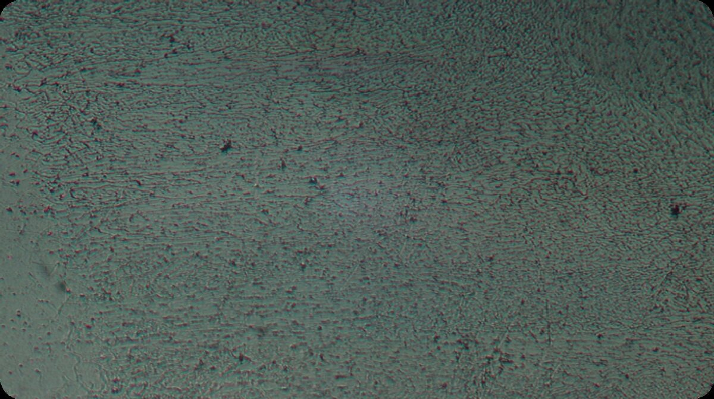
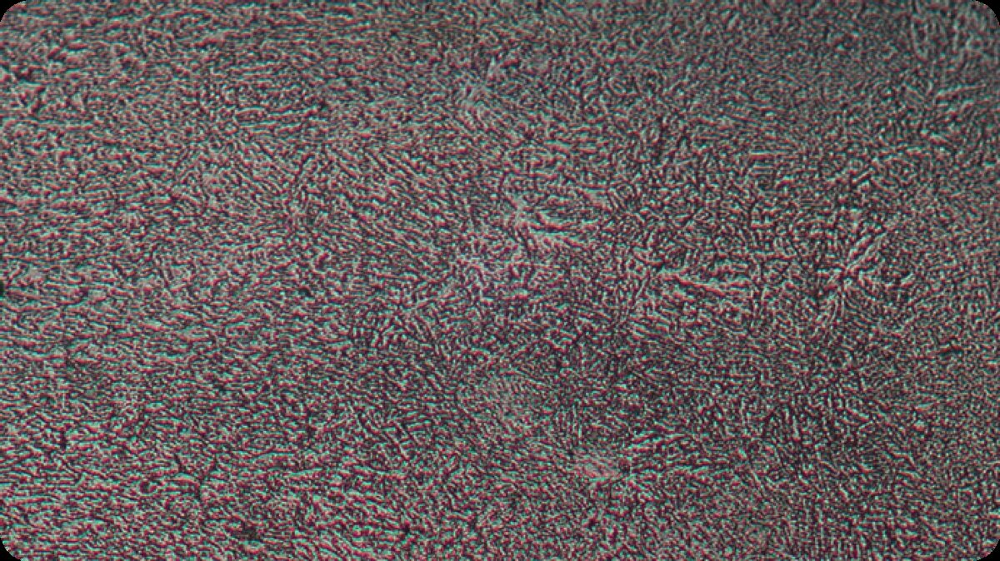
ConventionalUltrasonic
Fig. 3 — Grain structure, ×200
The conventional weld shows dendritic growth in several locations and an unevenly
distributed grain structure, with grains crowding around the dendrites. With
ultrasound there are no agglomerations, the structure is even, and the only denser
region is where two solidification fronts meet.
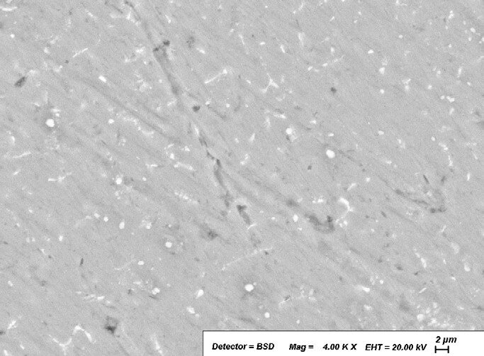
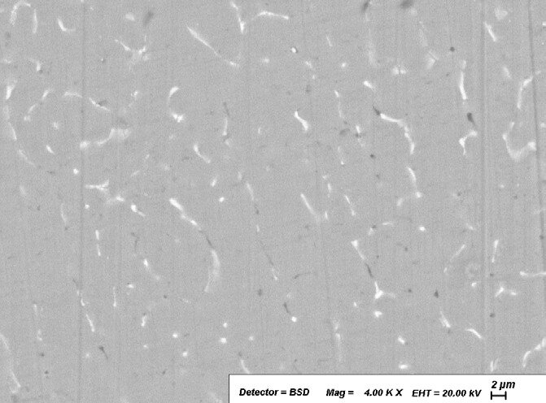
LinearSpherical
Fig. 4 — Intermetallics, SEM 4000× (BSD, 20 kV)
This is the finding that matters most. Without ultrasound the intermetallic compounds
form long linear structures — textbook crack initiators. With ultrasound they are
smaller and largely spherical, which resist crack initiation far better. That
morphology change is the mechanism behind the strength gain.
Results
Measured outcomes of ultrasonic-assisted laser welding versus conventional laser welding on AA6082
Measure
Conventional
Ultrasonic-assisted
Change
Ultimate tensile strength — study average
baseline
+10%
▲ consistent across trials
Tensile & yield strength — optimum settings
baseline
+26%
▲ 80 W, 28 kHz, 25 mm/s
Weld profile straightness (aspect ratio)
AR 1.38
AR 1.19
▲ 14–62% across thicknesses
Centreline microcracking
present
eliminated
▲ in every sonicated trial
Intermetallic morphology
linear
spherical
▲ fewer crack initiators
Plasma cloud & spatter
baseline
reduced
▲ improved keyhole stability
The dominant mechanism is cavitation. Collapsing bubbles generate local forces strong
enough to break chemical bonds and raise local temperatures towards 10,000 K; bubble
growth and collapse take roughly 1 ms and 150 µs respectively, so those forces are
effective even under a rapidly moving laser spot. We calculated the cavitation threshold
was comfortably exceeded at the antinodes.
The rig and the process
Test rigTransducers bonded to the plate, under a robot-mounted laser head.BaselineWelding without ultrasound — larger plasma plume.With ultrasoundStabilised keyhole, reduced plasma and spatter.
Where it went
Peer-reviewed and published as Improvements in the Microstructure and Mechanical
Properties of Aluminium Alloys Using Ultrasonic-Assisted Laser Welding in
Metals 12(6):1041 (2022), and written up for the AILU membership in
The Laser User, Issue 106. I presented the concept at Ultramat open days in
2019 and 2020, and took it to ILAS in March 2023 as Soni-Laser — a route to
high-volume assembly of automotive battery packs.
Proving a weld before cutting metal: clutch drum strength analysis
A customer's clutch drum for an armoured executive vehicle had to survive a minimum of
100,000 miles under extreme conditions at a safety factor of 3.0. The first five weld
segments went in cleanly. The next five cracked. I was asked to determine the weld profile
that would actually hold — and why the existing one was failing.
3.0safety factor required
100kmiles service life
2015in service since
The corrected process ended the cracking, met the customer's requirement, and brought in an
influx of similar work from them and their partners.
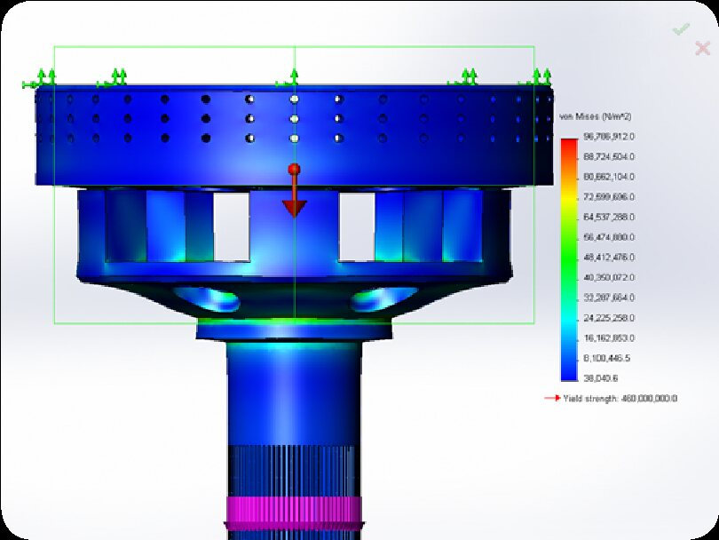
FEA traction study · von Mises stress
The problem
The top surface carried two distinct weld zones — five segments on an outer diameter and
five on an inner. In theory that is unremarkable, and the first five went in without
issue. The second five produced transverse cracking in the earlier welds:
cracks running perpendicular to the weld direction, the signature of longitudinal residual
stress. The initial welds also showed material contracting away from the centreline, the
mark of low-melting-point constituents such as iron sulphites.
What had to be established
The minimum permissible weld depth — weld size drives residual stress, so oversizing the weld was itself part of the problem.
The weld sequence that minimises accumulated thermal stress across ten segments.
The laser parameters that produce a weld profile able to resist cooling stresses.
Model & assumptions
Finite element model assumptions
Material
25CrMo4 (AISI 4130)
Geometry
Assembly modelled in SolidWorks as a solid, simulating a fully welded joint
Inner weld
3 mm solid
Traction study
Top surface of the drum edge pinned; 5,000 N applied to the shaft to simulate shear on the welds
Torque study
Drum side surface pinned; 500 N·m applied to the shaft
Solvers
Cosmos and Ansys
Outcome
The traction and torque analyses located the zones prone to the highest stress and
confirmed that a 3 mm weld depth was sufficient for the application —
so the weld did not need to be larger, it needed to be better placed and better
controlled. From that I derived the ideal weld order and calculated laser parameters to
suit. The cracking stopped.
Field testing by the customer exceeded their expectations. The assembly has been in
service since 2015, and the work led directly to more of the same
from that customer and their supply chain partners.
From CAD to coupon
AssemblyModelled in SolidWorks as a solid.Traction set-upEdge pinned, 5,000 N on the shaft.Torque set-upSide pinned, 500 N·m on the shaft.Traction resultvon Mises distribution under 5,000 N.Torque resultConfirmed 3 mm weld depth was adequate.Weld sequenceOrdered to minimise thermal stress.Achieved profileMacro of a representative weld coupon.
Case 03StrategyData analysisOperations
Reading the numbers that were quietly closing the business
Sales had been sliding since 2011. A large two-year production contract had pulled the
company's focus away from production and into tooling repair — a reactive, unplannable
market — and nothing had been put in place to replace the revenue when the contract ended.
Profitability was draining away. I went looking for what the data would actually support.
+66%turnover increase
3KPIs that mattered
0defect target set
Turnaround time, non-conformances and monthly revenue. Fix those three and the rest
followed — a full reversal of the sales decline, and ultimately a management buyout that
left the turnaround team owning the company.
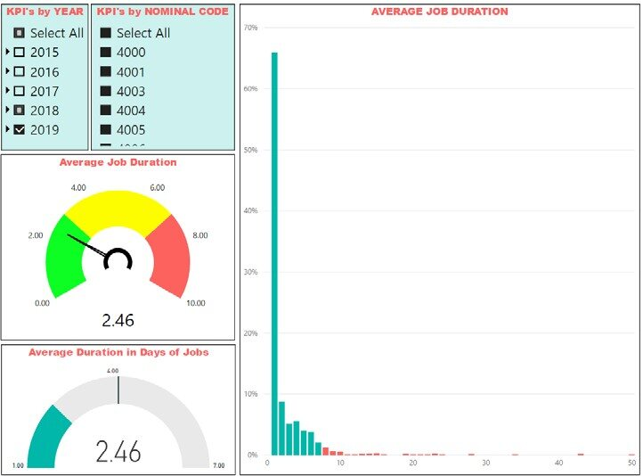
KPI dashboard · Power BI
The commercial reality
A firm supplying a niche service like laser welding survives on two things: it has to add
real value to the goods passing through it, and it has to hold a healthy customer base.
Added value depends on the workforce and the technology. The customer base depends on
part quality, turnaround time, and whether customers are willing to recommend you.
In 2012 a large two-year production job shifted the whole business's focus. When it
foreseeably ended, there was no plan to replace it, so the company drifted into tooling
repairs — reactive work that is extremely hard to plan around. Less capital came in,
profitability fell, and failure started to look inevitable.
Instrumenting the business
Before proposing anything I built the measurements. I designed a set of KPIs to establish
the current state and the trend, using Excel for the analysis and Power BI for the data
manipulation and dashboards. Three measures turned out to carry the signal:
Turnaround time per application
Non-conformances raised
Monthly revenue, segmented by sector
What the data said
Turnaround time per application was excessively long, and the non-conformance count was
high. Those two together explained the customer attrition entirely — customers were
waiting too long and receiving parts they had to question. Neither problem needed capital
expenditure to fix. They needed process.
Sales by sectorThe shape of the problem, over time.KPI dashboardAverage job duration by year and code.Revenue vs targetMonthly tracking of the recovery.
What I changed
Wrote formal working procedures for daily production and welding activity.
Introduced additional inbound and outbound quality control.
Ran staff training built around a quality culture — stopping cross-contamination, and setting an explicit zero-defect target rather than an acceptable rejection rate.
Shifted the business focus back to production, now underpinned by a quality culture that genuinely added value to the welding service.
Results
Customer numbers increased, and existing customers began referring the company to their partners.
Turnover up 66%.
The multi-year sales decline was fully reversed.
I was awarded shares in the business in recognition of the turnaround.
The recovery held. In 2025 I completed a management buyout of the
company alongside my two fellow directors — the strategy I wrote in 2016 is now the
business I co-own.
Case 04CraftSince 2014Marking & engraving
Laser marking and deep engraving, programmed and proven
Designing and operating laser markers since 2014 — programming, fixturing, and dialling in
depth and contrast across tool steels, aluminium and stainless. Traceability codes,
certification marks, branding and deep engraving on production tooling, plus the operator
training and process support that keeps it repeatable.
2014operating since
TruTopsMark programming
Multi-materialsteel · alu · stainless
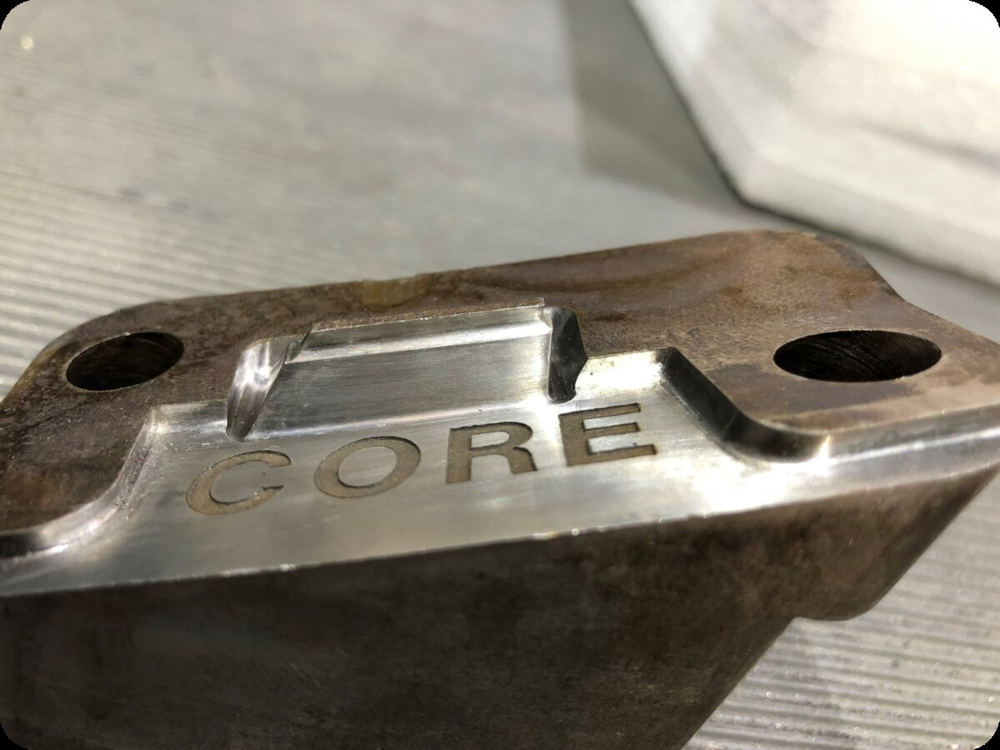
Deep engraving · tooling insert
Programming through to finished part
ProgrammingParameters set in TruTops Mark before firing.Artwork prepMirrored text for a mould insert.Set-upClamped and aligned, pilot beam confirming position.ResultConsistent depth, clean character walls.In progressCircular component being traced in the fixture.Certification marksStandard, notified body and part identity.Contrast markingLegibility through parameters, not depth.
“
His diligent and methodical approach to problem solving has frequently been a calming
influence on our workforce when things aren't going to plan.
Written in support of my application for chartered status, the letter describes a cold
cracking problem in gear-to-shaft welds that was not occurring for the normal metallurgical
reasons. I traced it to the composition of the shaft material, redesigned the joint to use a
filler pass with a specific grade of wire chosen to counteract that metallurgy, modelled and
proved the change, and presented the solution to the customer — gaining approval throughout
the supply chain and saving the project.
Alistair Houghton
General Manager, Carr's Welding Technologies Ltd — February 2020
Written when Alistair was my manager. We went on to buy the company
together, and he is now my co-owner — so read it as the view of someone who backed his own
judgement with his own money, not as an independent reference.
04 — Research & speaking
Published, peer-reviewed, and presented
When the available technology could not do what customers needed, the answer was to research a
better one — and then to share it, in journals, trade press and from the front of the room.
Peer-reviewed journal
Improvements in the Microstructure and Mechanical Properties of Aluminium Alloys Using Ultrasonic-Assisted Laser Welding
Teyeb, A.; Silva, J.; Kanfoud, J.; Carr, P.; Gan, T.-H.; Balachandran, W. Metals 2022, 12(6), 1041. MDPI. Published 17 June 2022.
Cited by 23 subsequent works, including
follow-on research at the Brunel Innovation Centre extending the method to dissimilar-metal
joints.
Crossref, September 2026
Improving Al Alloy Properties Using Ultrasonic Laser Welding
Silva, J. & Teyeb, A. The Laser User, Issue 106, Autumn 2022 — the journal of the Association of Industrial Laser Users (AILU).
Invited feature
MSc thesis
Disk Laser Welding of Aluminium Rings — Autogenous Welding of Aluminium Alloy AA6082
Silva, J.
Instituto Superior Técnico, Universidade Técnica de Lisboa, 2011. Research carried out at Carr's Welding Technologies Ltd.
Cracking eliminated without heat treatment or filler
Podcast
TWI Innovation Network Podcast, Episode 4
19 March 2021. In conversation with Dr Cem Selcuk, Head of Business Development at the
TWI Innovation Network, alongside Phil Carr.
On the complexities of laser welding, and where artificial intelligence and collaborative
robots could take the industry.
Mar 2023Soni-Laser — ultrasonic-assisted laser welding for high-volume assembly of automotive battery packsILAS
May 2022Design for laser weldingCarr's Medical Industry Webinar
Feb 2021New technologies and advancements in the welding industryILAS
Jan 2020Ultrasonic-assisted laser weldingUltramat Open Day
Mar 2019Guiding hand — from welding concept to productionILAS
Jan 2019Ultrasonic-assisted laser welding — the conceptUltramat Open Day
Feb 2018Laser welding at Carr's Welding TechnologiesJaguar Land Rover
Dec 2017Laser welding at Carr's Welding TechnologiesTWI
Nov 2017Laser manufacturing of lightweight structuresAILU Lightweighting Workshop, Warwick
May 2017Carr's Welding — capability overviewRenault
Dec 2015Laser surface engineeringAILU Workshop
Sep 2015Successful industrial welding techniques and applications with laser & electron beamAILU Workshop
05 — Experience
From the shop floor to the board table
I first walked into Carr's Welding Technologies as a placement student in 2009. Today I set
the company's technical direction and co-own it.
Sep 2021 — Present
Technical Director & Co-owner
CWT Group · Kettering, UK · cwt-group.com Shareholder since 2016; statutory director since September 2021; co-owner via management buyout, October 2025 (completed March 2026). Trading name of Carr's Welding Technologies Ltd (no. 03921135) since the September 2025 rebrand.
Technical
Evaluate material weldability at quote stage and develop strategies that minimise welding issues in materials with poor weldability.
Calculate weld strength at design stage and advise customers on the weld depth and profile their part actually requires.
Advise customers on the right welding technology for their application, and design new or improved parts to suit.
Calculate the parameters for every laser operation; assess and procure new technology.
Guide every R&D project — strategy, parameters and welding method — through to the required outcome.
CNC technical support and training; laser marking programming, support and training.
Quality
Produce the production and welding procedures used in daily work.
Run internal audits and maintain the quality management system to ISO 9001:2015 and AS9100D.
Carry out all quality inspections: visual, dye penetrant, helium leak, macro and micro analysis.
Issue certificates of conformance, inspection reports and first article inspection reports.
Improve process quality using PFMEA and PPAP for automotive and aerospace customers.
Build and maintain the company's stock control and KPI calculation software.
Identify non-conformances and develop corrective actions that stop them recurring.
Key achievements
Developed a program that calculates welding parameters from customer requirements. Changed the
profile and strategy of the company's business plan — and carried the workforce with it —
reversing the sales decline and increasing turnover by 66%. Responsible for the content and
redesign of the company website.
Apr 2013 — Aug 2021
Quality & Technical Manager
Carr's Welding Technologies Ltd · Kettering, UK — now trading as CWT Group
Scope
All quality and technical assurance across a business serving aerospace, automotive, pharmaceutical, Formula 1, oil & gas, naval and tool engineering.
Created and maintained the KPIs the business is still measured on.
Improved daily workflow using PERT, Critical Path Method and Gantt planning.
Also
Coached the workforce on best welding practice.
Created key company documents — employee handbook, contracts, customer registration forms, training matrix.
Created and implemented the ISO 14001 environmental management system in 2021.
Recognition
Awarded shares in the business in 2016 for the part I played in turning around its declining
profitability — the first step towards the management buyout completed in 2025.
In charge of all quality and technical assurance for the sister company.
Responsible for elevating its quality management system to AS9100.
Planned strategies to improve production workflows; created and maintained KPIs.
Achievement
Created new ways of working by planning production workflows and applying project management tools — including the spreadsheet systems that made the quality management system uplift possible.
Mar 2012 — Mar 2013
Technical & Quality Engineer
Carr's Welding Technologies Ltd · Kettering, UK
How it started
Recruited on graduation, by the owner of the company whose equipment I had just spent my master's research on.
Brought in specifically to raise the company's quality level — the brief that shaped everything that followed.
Where it led
Promoted to Quality & Technical Manager within a year.
This is where my career as a mechanical engineer began, and where the pursuit of a meaningful impact on the laser welding industry started.
2009
Summer placement & MSc research
Carr's Welding Technologies Ltd · Kettering, UK
Where it all began
Arrived as a placement student from Instituto Superior Técnico to work on laser welding of aluminium alloy AA6082 — the crack-prone alloy I have been chasing ever since.
The placement became the basis of my MSc thesis, then my first job, then the ultrasonic research, and eventually the company itself.
06 — Credentials
Qualifications, standards and toolset
Formal education in Lisbon, standards implemented in Kettering, and the software I actually use
week to week.
Education
MSc Mechanical Engineering
Instituto Superior Técnico, Universidade Técnica de Lisboa
Mar 2007 — Jan 2012
Thesis: Disk Laser Welding of Aluminium Rings — Autogenous Welding of Aluminium Alloy
AA6082, carried out at Carr's Welding Technologies Ltd. Developed a method to stop hot
cracking in 6xxx-grade aluminium without heat treatment or filler material.
Highest grade in the year for Heat Transfer.
BEng Mechanical Engineering
Instituto Superior Técnico, Universidade Técnica de Lisboa
Sep 2003 — Sep 2007
Honourable mention in the SolidWorks 2004 International Contest for the project “Monster Truck”.
Certificate of Proficiency in English (CPE)
Cambridge School Learning Institute, Lisbon
Sep 2003 — Sep 2004
Level C2 on the Council of Europe Common European Framework; Level 3 on the UK National Qualifications Framework.
Standards & assurance
AS9100D — aerospace QMS. Wrote and implemented it from scratch; maintain it and run the internal audits.
ISO 9001:2015 — quality management. Implemented, maintained, internally audited.
ISO 14001 — environmental management. Created and implemented in 2021.
PFMEA & PPAP — automotive and aerospace process quality.
FAIR, CofC, IR — first article inspection reports, certificates of conformance, inspection reports.
May 2014Magna Steyr — laser setup and training, Austria
Feb 2014TRUMPF — laser welding technology assessment, Stuttgart, Germany
2003Portuguese National Triathlon Champion
2003Certificate of Proficiency in English, Cambridge School
2004Honourable mention, SolidWorks International Contest — project “Monster Truck”
2007BEng Mechanical Engineering awarded
2009Summer placement at Carr's Welding Technologies — laser welding of AA6082
2011Highest grade of the year in Heat Transfer
2012MSc Mechanical Engineering awarded; thesis “Laser Welding of Aluminium Rings” published
2012Joined Carr's Welding Technologies Ltd as Technical & Quality Engineer
2013Promoted to Quality / Technical Manager
2013Built a program that calculates laser settings from customer requirements
2013Began compiling the AS9100 QMS for Carr's Welding Products Ltd, formed the following year
2016Turned around the declining profitability trend; awarded shares in recognition
2019Developed the ultrasonic-assisted laser welding technique
2021Created and implemented the ISO 14001 EMS for Carr's Welding Technologies Ltd
2021Promoted to Technical Director
2022Published in Metals — ultrasonic-assisted laser welding of aluminium alloys
2022Feature article published in The Laser User, Issue 106
08 — Contact
Got a part that won't weld?
Whether it is a weldability question on a drawing, a joint that keeps failing, a quality system
that needs to reach AS9100D, or a research collaboration — I would be glad to talk it through.